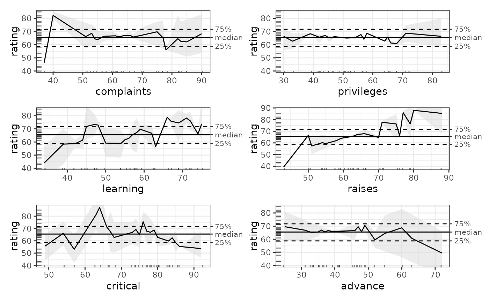

Execute full model bootstrapping with ALE calculation on each bootstrap run
Usage
model_bootstrap(
data,
model = NULL,
...,
model_call_string = NULL,
model_call_string_vars = character(),
parallel = parallel::detectCores(logical = FALSE) - 1,
model_packages = as.character(NA),
boot_it = 100,
seed = 0,
boot_alpha = 0.05,
boot_centre = "mean",
output = c("ale", "model_stats", "model_coefs"),
ale_options = list(),
tidy_options = list(),
glance_options = list(),
silent = FALSE
)Arguments
- data
dataframe. Dataset that will be bootstrapped.
- model
See documentation for
ale()- ...
not used. Inserted to require explicit naming of subsequent arguments.
- model_call_string
character string. If NULL,
model_bootstrap()tries to automatically detect and construct the call for bootstrapped datasets. If it cannot, the function will fail early. In that case, a character string of the full call for the model must be provided that includesboot_dataas the data argument for the call. See examples.- model_call_string_vars
character. Character vector of names of variables included in
model_call_stringthat are not columns indata. If any such variables exist, they must be specified here or else parallel processing will produce an error. If parallelization is disabled withparallel = 0, then this is not a concern.- parallel
See documentation for
ale()- model_packages
See documentation for
ale()- boot_it
integer from 0 to Inf. Number of bootstrap iterations. If boot_it = 0, then the model is run as normal once on the full
datawith no bootstrapping.- seed
integer. Random seed. Supply this between runs to assure identical bootstrap samples are generated each time on the same data.
- boot_alpha
numeric. The confidence level for the bootstrap confidence intervals is 1 - boot_alpha. For example, the default 0.05 will give a 95% confidence interval, that is, from the 2.5% to the 97.5% percentile.
- boot_centre
See See documentation for
ale()- output
character vector. Which types of bootstraps to calculate and return:
'ale': Calculate and return bootstrapped ALE data and plot.
'model_stats': Calculate and return bootstrapped overall model statistics.
'model_coefs': Calculate and return bootstrapped model coefficients.
'boot_data': Return full data for all bootstrap iterations. This data will always be calculated because it is needed for the bootstrap averages. By default, it is not returned except if included in this
outputargument.
- ale_options, tidy_options, glance_options
list of named arguments. Arguments to pass to the
ale(),broom::tidy(), orbroom::glance()functions, respectively, beyond (or overriding) the defaults. In particular, to obtain p-values for ALE statistics, see the details.- silent
See documentation for
ale()
Value
list with tibbles of the following elements (depending on values requested in
the output argument:
model_stats: bootstrapped results from
broom::glance()model_coefs: bootstrapped results from
broom::tidy()ale: bootstrapped ALE results
data: ALE data (see
ale()for details about the format)stats: ALE statistics. The same data is duplicated with different views that might be variously useful. The column
by_term: statistic, estimate, conf.low, median, mean, conf.high. ("term" means variable name.) The column names are compatible with the
broompackage. The confidence intervals are based on theale()function defaults; they can be changed with theale_optionsargument. The estimate is the median or the mean, depending on theboot_centreargument.by_statistic: term, estimate, conf.low, median, mean, conf.high.
estimate: term, then one column per statistic Provided with the default estimate. This view does not present confidence intervals.
plots: ALE plots (see
ale()for details about the format)
boot_data: full bootstrap data (not returned by default)
other values: the
boot_it,seed,boot_alpha, andboot_centrearguments that were originally passed are returned for reference.
Details
No modelling results, with or without ALE, should be considered reliable without
being bootstrapped.
For large datasets with clear separation between training and testing samples,
ale() bootstraps the ALE results of the test data. However, when a dataset
is too small to be subdivided into training and test sets, then the entire
model should be bootstrapped. That is, multiple models should be trained,
one on each bootstrap sample. The reliable results are the average results
of all the bootstrap models, however many there are. For details, see
the vignette on small datasets or the details and examples below.
model_bootstrap() automatically carries out full-model bootstrapping suitable
for small datasets. Specifically, it:
Creates multiple bootstrap samples (default 100; the user can specify any number);
Creates a model on each bootstrap sample;
Calculates model overall statistics, variable coefficients, and ALE values for each model on each bootstrap sample;
Calculates the mean, median, and lower and upper confidence intervals for each of those values across all bootstrap samples.
P-values
The broom::tidy() summary statistics will provide p-values as normal, but the
situation is somewhat complicated with p-values for ALE statistics. The challenge
is that the procedure for obtaining their p-values is very slow: it involves
retraining the model 1000 times. Thus, it is not efficient to calculate p-values
on every execution of model_bootstrap(). Although the ale() function provides
an 'auto' option for creating p-values,
that option is disabled in model_bootstrap() because it would be far too slow:
it would involve retraining the model 1000 times the number of bootstrap iterations.
Rather, you must first create a p-values function object using the procedure
described in help(create_p_funs). If the name of your p-values object is
p_funs, you can then request p-values each time you run model_bootstrap()
by passing it the argument ale_options = list(p_values = p_funs).
References
Okoli, Chitu. 2023. “Statistical Inference Using Machine Learning and Classical Techniques Based on Accumulated Local Effects (ALE).” arXiv. https://arxiv.org/abs/2310.09877.
Examples
# attitude dataset
attitude
#> rating complaints privileges learning raises critical advance
#> 1 43 51 30 39 61 92 45
#> 2 63 64 51 54 63 73 47
#> 3 71 70 68 69 76 86 48
#> 4 61 63 45 47 54 84 35
#> 5 81 78 56 66 71 83 47
#> 6 43 55 49 44 54 49 34
#> 7 58 67 42 56 66 68 35
#> 8 71 75 50 55 70 66 41
#> 9 72 82 72 67 71 83 31
#> 10 67 61 45 47 62 80 41
#> 11 64 53 53 58 58 67 34
#> 12 67 60 47 39 59 74 41
#> 13 69 62 57 42 55 63 25
#> 14 68 83 83 45 59 77 35
#> 15 77 77 54 72 79 77 46
#> 16 81 90 50 72 60 54 36
#> 17 74 85 64 69 79 79 63
#> 18 65 60 65 75 55 80 60
#> 19 65 70 46 57 75 85 46
#> 20 50 58 68 54 64 78 52
#> 21 50 40 33 34 43 64 33
#> 22 64 61 52 62 66 80 41
#> 23 53 66 52 50 63 80 37
#> 24 40 37 42 58 50 57 49
#> 25 63 54 42 48 66 75 33
#> 26 66 77 66 63 88 76 72
#> 27 78 75 58 74 80 78 49
#> 28 48 57 44 45 51 83 38
#> 29 85 85 71 71 77 74 55
#> 30 82 82 39 59 64 78 39
## ALE for general additive models (GAM)
## GAM is tweaked to work on the small dataset.
gam_attitude <- mgcv::gam(rating ~ complaints + privileges + s(learning) +
raises + s(critical) + advance,
data = attitude)
summary(gam_attitude)
#>
#> Family: gaussian
#> Link function: identity
#>
#> Formula:
#> rating ~ complaints + privileges + s(learning) + raises + s(critical) +
#> advance
#>
#> Parametric coefficients:
#> Estimate Std. Error t value Pr(>|t|)
#> (Intercept) 36.97245 11.60967 3.185 0.004501 **
#> complaints 0.60933 0.13297 4.582 0.000165 ***
#> privileges -0.12662 0.11432 -1.108 0.280715
#> raises 0.06222 0.18900 0.329 0.745314
#> advance -0.23790 0.14807 -1.607 0.123198
#> ---
#> Signif. codes: 0 ‘***’ 0.001 ‘**’ 0.01 ‘*’ 0.05 ‘.’ 0.1 ‘ ’ 1
#>
#> Approximate significance of smooth terms:
#> edf Ref.df F p-value
#> s(learning) 1.923 2.369 3.761 0.0312 *
#> s(critical) 2.296 2.862 3.272 0.0565 .
#> ---
#> Signif. codes: 0 ‘***’ 0.001 ‘**’ 0.01 ‘*’ 0.05 ‘.’ 0.1 ‘ ’ 1
#>
#> R-sq.(adj) = 0.776 Deviance explained = 83.9%
#> GCV = 47.947 Scale est. = 33.213 n = 30
# \donttest{
# Full model bootstrapping
# Only 4 bootstrap iterations for a rapid example; default is 100
# Increase value of boot_it for more realistic results
mb_gam <- model_bootstrap(
attitude,
gam_attitude,
boot_it = 4,
model_packages = 'mgcv', # required for parallel processing
parallel = 2 # CRAN limit (delete this line on your own computer)
)
# If the model is not standard, supply model_call_string with
# 'data = boot_data' in the string (not as a direct argument to [model_bootstrap()])
mb_gam <- model_bootstrap(
attitude,
model_call_string = 'mgcv::gam(
rating ~ complaints + privileges + s(learning) +
raises + s(critical) + advance,
data = boot_data
)',
boot_it = 4,
model_packages = 'mgcv', # required for parallel processing
parallel = 2 # CRAN limit (delete this line on your own computer)
)
# Model statistics and coefficients
mb_gam$model_stats
#> # A tibble: 3 × 7
#> name estimate conf.low mean median conf.high sd
#> <chr> <dbl> <dbl> <dbl> <dbl> <dbl> <dbl>
#> 1 df 18.2 15.2 18.2 18.5 20.8 2.50
#> 2 df.residual 11.8 9.15 11.8 11.5 14.8 2.50
#> 3 nobs 30 30 30 30 30 0
mb_gam$model_coefs
#> # A tibble: 2 × 7
#> term estimate conf.low mean median conf.high std.error
#> <chr> <dbl> <dbl> <dbl> <dbl> <dbl> <dbl>
#> 1 s(learning) 8.41 7.41 8.41 8.65 8.99 0.771
#> 2 s(critical) 4.84 1.40 4.84 5.65 6.90 2.60
# Plot ALE
mb_gam$ale$plots |>
patchwork::wrap_plots()

# }